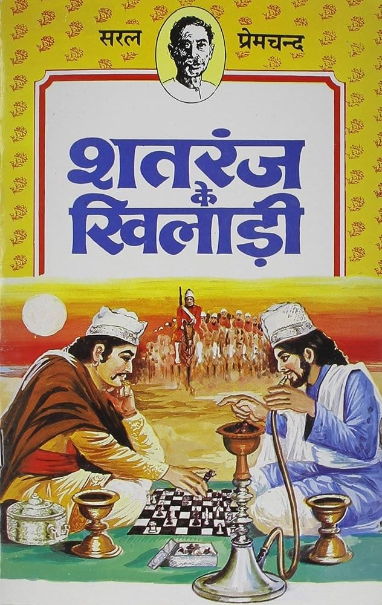

Shatranj Ke Khilari
Munshi Premchand's birthday is at the end of this month, and the piece of his i keep coming back to is not one of the famine-and-debt stories i wrote about when i first started this project, it's Shatranj Ke Khilari, published in the magazine Madhuri in 1924, which is the closest thing in the Indian literary canon to a story that is secretly about the difference between playing a game well and playing the right game at all.

the setup
the story is set in Lucknow in 1856, the year the British East India Company annexed the kingdom of Awadh from its last independently ruling Nawab, Wajid Ali Shah, on the pretext of misgovernance, using the Doctrine of Lapse that Lord Dalhousie had already applied to annex a string of other princely states. two minor aristocrats, Mirza Sajjad Ali and Mir Roshan Ali, spend the entire story playing chess, obsessively, from morning to evening, day after day, oblivious to their households, their wives, their debts, and eventually to the political collapse happening around them. by the story's end the Nawab has been deposed and Awadh has been annexed without a shot fired in its defense, and the two men, having relocated their board to a quiet spot outside the city to avoid interruption, are found dead, having killed each other in a fit of rage over the game, at the exact moment the British forces are marching past them.
formalizing the micro-game
chess is, in the formal sense, one of the cleanest objects game theory has to offer. we can express it as a extensive-form game $G_c = \langle N_c, A_c, H_c, Z_c, \chi_c, \rho_c, u_c \rangle$, where the player set $N_c = \{1, 2\}$ represents White and Black. $H_c$ is the set of histories, $A_c(h)$ is the set of legal moves at history $h$, $\chi_c: H_c \setminus Z_c \to N_c$ maps non-terminal histories to the player whose turn it is to move, and $Z_c$ is the set of terminal histories.
because chess is finite, deterministic, and has perfect information, Ernst Zermelo proved in 1913 that $G_c$ is strictly determined. for any history $h \in H_c$, the minimax value $v_i(h)$ for player $i \in \{1, 2\}$ is defined recursively over terminal states $z \in Z_c$ where $u_i(z) \in \{-1, 0, 1\}$:
$$v_i(h) = \begin{cases} u_i(h) & \text{if } h \in Z_c \\ \max_{a \in A_c(h)} v_i(h \circ a) & \text{if } \chi_c(h) = i \\ \min_{a \in A_c(h)} v_i(h \circ a) & \text{if } \chi_c(h) \neq i \end{cases}$$this guarantees that from the initial empty history $h_0$, there exists a pure strategy profile $s_c^* = (s_1^*, s_2^*)$ that achieves the unique game-theoretic value $v(h_0)$. this is the mathematical guarantee that makes chess satisfying to obsess over. every move $a \in A_c(h)$ is answerable to a well-defined criterion of correctness.
the macro-game and miscalculated action spaces
the annexation of Awadh is the opposite kind of object. let this macro-game be $G_m = \langle N_m, H_m, Z_m, P, u_m \rangle$, where the true player set consists of the British East India Company ($E$) and the Awadh Court ($C$), so $N_m = \{E, C\}$.
Mirza and Mir are not players in $N_m$. they belong to a population set $P$, acting as passive elements whose state is driven by the strategy profile $s_m \in S_m$ chosen by $N_m$. Premchand's satire works because Mirza and Mir model their existence through a subjective state space $\hat{S}_i$ that completely substitutes $G_c$ for $G_m$.
formally, their decision-making assumes their total utility $U_i$ is separable and dominated by $G_c$:
$$U_i(s_c, s_m) = \alpha u_{i, c}(s_c) + (1 - \alpha) u_{i, m}(s_m), \quad \text{with } \alpha \approx 1$$in reality, the true payoff structure sets $\alpha = 0$ for their survival. the Company operates with a strategy set $A_E = \{\text{negotiate}, \text{depose}, \text{annex}\}$, while the Court's response space $A_C$ is severely constrained. because $u_{i, m}(s_m) \to -\infty$ when $s_m = (\text{annex}, \text{acquiesce})$, Mirza and Mir's decision to maximize $u_{i, c}$ inside $G_c$ represents a local optimization that is completely orthogonal to their actual payoff boundary.
backward induction and truncated game trees
the technique that lets a rational player choose a move in a sequential game like chess is backward induction. it is the same logic behind the minimax theorem, formalized by John von Neumann in 1928, which guarantees that in any finite zero-sum game with perfect information, there is an optimal strategy profile $s^* = (s_i^*, s_{-i}^*)$ satisfying:
$$u_i(s_i^*, s_{-i}^*) \ge \max_{s_i} \min_{s_{-i}} u_i(s_i, s_{-i})$$General James Outram, the Company's representative negotiating Awadh's annexation, is doing exactly this kind of backward induction, just on the macro-game tree $T_m$ instead of the chessboard tree $T_c$. he evaluates the terminal node $z_{\text{annex}} \in Z_m$, computes the optimal path through subgame perfection, and executes the sequence of actions $a_E^{(1)}, a_E^{(2)}, \dots, a_E^{(k)}$ required to force that outcome.
Mirza and Mir apply this exact backward-induction operator $\text{BI}(T_c)$ to their chessboard while evaluating $T_m$ as a trivial single-node tree with no branches. this is the story's cruelest joke: it isn't that the two aristocrats lack the capacity for strategic thought, Premchand is careful to show them thinking with real sophistication about the game in front of them. it's that they have restricted their backward induction to a game tree that yields zero payoff toward their true survival.
information sets and common knowledge
game theory usually assumes common knowledge of the rules, meaning the game structure $G$, the action spaces $A$, and the payoff functions $u$ are known to all players, everyone knows that everyone knows, and so on ad infinitum. chess satisfies this trivially. $G_m$ does not.
we can model this as a game with incomplete information where players hold subjective beliefs $\mu_i$ over the true game state $\theta \in \Theta$. the Company operates under type $\theta_{\text{realpolitik}}$, where the game is a single-stage extraction contest with dominant strategy $a_E^* = \text{annex}$. the Awadh aristocracy operates under belief distribution $\mu_C(\theta_{\text{feudal}}) = 1$, assuming a repeated diplomatic game where compliance yields perpetual equilibrium.
because Mirza and Mir fail to perform Bayesian updating on their prior beliefs when observing external signals $y \in Y$ (such as troop movements), their posterior belief remains fixed:
$$\mu_i(\theta_{\text{realpolitik}} \mid y) = \frac{P(y \mid \theta_{\text{realpolitik}}) \mu_i(\theta_{\text{realpolitik}})}{P(y)} = 0$$a party operating under an unadjusted, incorrect belief distribution cannot play optimally in $G_m$, because expected utility maximization $\arg\max_{a_i} \mathbb{E}_{\mu_i}[u_i(a_i, a_{-i})]$ is computed relative to a subjective game model that bears no relation to the true payoff matrix.
the game that ends the game
there's a bitter formal irony in how the two friends actually die. having fled their households to play in peace, they get into an argument over an illegal move, tempers rise, and they kill each other with their swords over a dispute about $G_c$ itself, at the exact historical moment $G_m$ reaches its terminal state $z_{\text{annex}}$.
at the moment of the duel, their internal game $G_c$ undergoes a payoff collapse. the state space transitions from a zero-sum recreational game to a deadly subgame $G_d$ where the action set becomes $A_d = \{\text{strike}, \text{yield}\}$ and the payoff matrix transforms into a coordination failure:
$$\begin{pmatrix} (-10, -10) & (1, -1) \\ (-1, 1) & (0, 0) \end{pmatrix}$$both players choose the dominated action $\text{strike}$, driving the outcome to the worst joint payoff $(-10, -10)$. the well-defined, zero-sum, perfectly rational game consumes them entirely, while the actual high-stakes political game proceeds to its absorbing state without requiring their participation or even their notice. Premchand doesn't need to state the moral outright, and doesn't, the structure does it for him: a game with clean rules and legible payoffs is enormously more attractive to reason about than a messy, high-stakes, poorly-specified one, and that attractiveness has nothing to do with which game actually determines your future. Satyajit Ray, adapting the story into his 1977 film, widened the lens to show Outram's calculations directly alongside the two nawabs' matches, which makes the asymmetry explicit in a way Premchand's tighter, more claustrophobic original leaves implicit, and I think the original is stronger for the restraint. you're never shown the other board. you just watch two extremely intelligent men lose, permanently, at a game they never noticed they were playing.